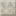

层叠石灰岩：博物馆里的地层剖面。
参数
材质石灰岩
形制层叠
硬度 / 抗爆1.25 / 0.8
详细教程
怎么获得
切石机 1:1，从任意石灰岩材质方块切来，没有工作台配方。米黄的条带深浅差很小，远看是一整面浅色，近看才发现层次。
它在材质标签里，能切回整块或改切台阶、墙，做展陈改动时不用重新挖料。
怎么用
最适合地层剖面展示和博物馆展墙：把一层层岩层摊在观众面前，配说明牌就是一块活的剖面图。并排铺开时条带自动接续，像一整段岩芯。
做建筑的基座和台基也好看，浅色层理让台基显得比实际更厚。
展墙前留一排射灯，光斜着打在条带上，浅米的层理才会显出阴影；如果正对着灯，磨光和层叠都会变成一片发白的平面。
搭配与坑
配化石、砂砾、深板岩、铜制说明牌；剖面上下用整块切制收边，中间才是层叠，主题更清楚。
坑是抗爆只有 0.8：室外挡土墙用它会整片崩掉，室外还是换花岗岩或凝灰岩。